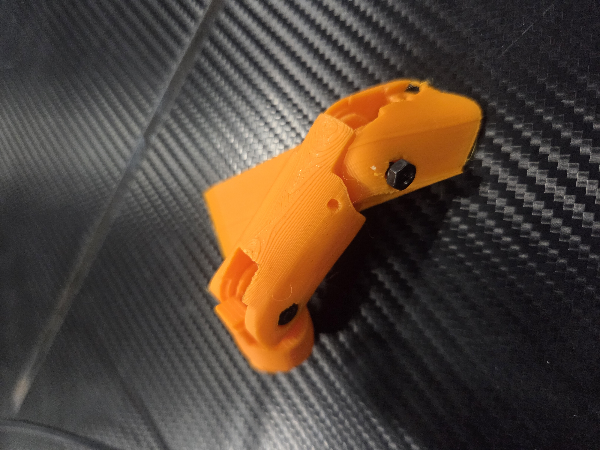
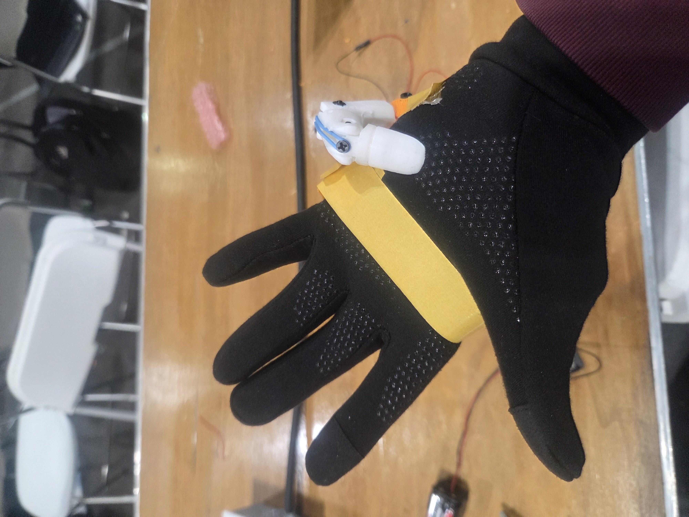

Hardware Interface
A wearable robotic "6th finger" prototype designed to augment hand capabilities by translating user inputs into mechanical motion. Developed in a high-intensity, 48-hour hackathon environment, the project integrates custom firmware with physical prototyping to deliver responsive, real-time motor control.
Built collaboratively under the team name "The Three Musketeers" at StarkHacks, this project involved both hardware assembly and low-level firmware development. The control software utilizes calibrated activation thresholds and software debouncing to convert raw inputs into stable servo movements, mitigating the erratic jitter common in rapid hardware prototyping. The physical structure relies on custom-designed 3D-printed joints and link mechanisms powered by an ESP32 microcontroller.

